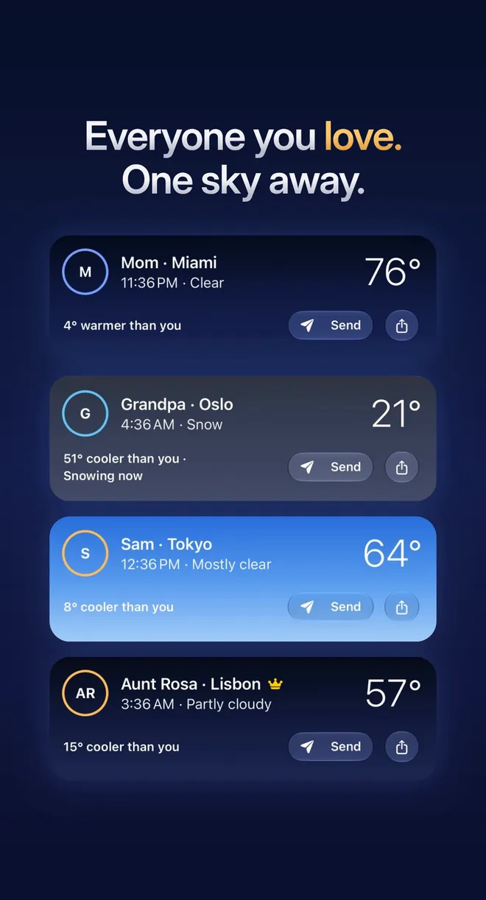
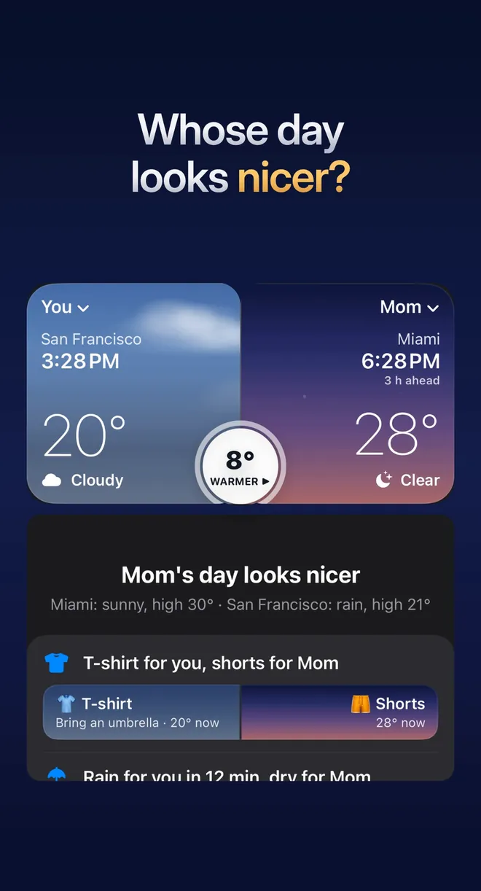
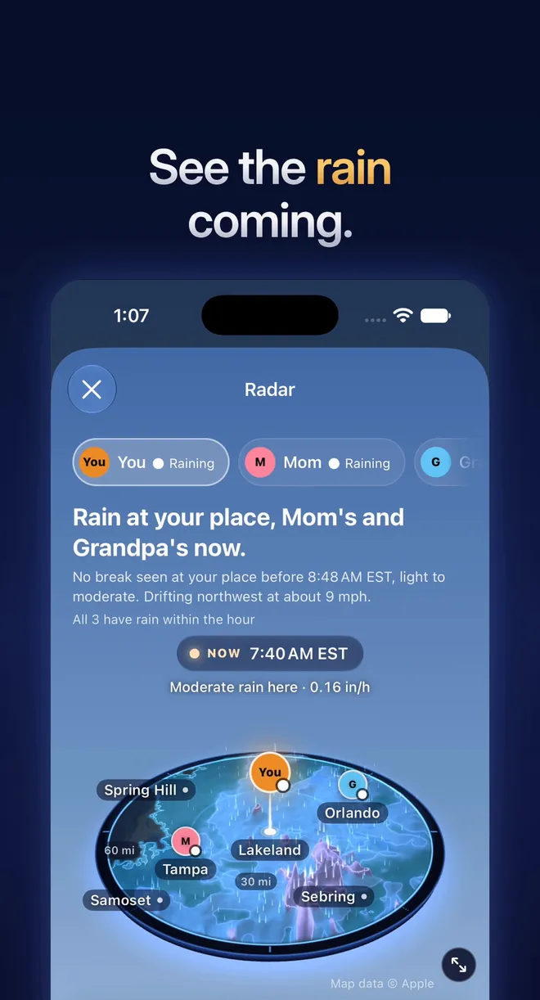

Family Weather: Side by Side
Your family's weather, side by side
Stay in touch, rain or shine. See the sky where Mom, Grandpa or your kids live, next to yours, with the time there. Then tap Send and a text about it is ready.
Download on the App StoreFree on the App Store for iPhone, iPad and Apple Watch, with optional Family Weather Plus.



A small reason to talk to family, every day
Everyone's sky, side by side
Add Mom in Miami and Grandpa in Oslo by choosing their cities. See each sky and the local time there, so you know if it's a good time to call. They don't need the app.
Compare two cities in plain words
Put anyone's day next to yours and get a plain answer: whose day looks nicer, what to wear, who gets rain and a good time to call.
A text that writes itself
Tap Send beside a name and the message is ready: "Miami is 26°F warmer than Chicago today: 84°F there, 58°F here. Hoodie on my end, shorts on yours." With Plus, pick a tone, from warm to dry wit.
3D rain radar, US and Canada
Rain stands up off the map around you and your family, with a plain line like "Rain reaches Mom in about 20 min." Free, in the United States and Canada where radar reaches.
The next hour of rain
The rain clock shows when rain starts, how heavy it gets and when it stops, on the Lock Screen and in the Dynamic Island. Minute-by-minute rain shows where Apple Weather offers it.
On iPad, Apple Watch and in Messages
On iPad the Family Wall is home, with a living pane for each person. On Apple Watch each person has a page with a button that writes them a text. In Messages, send your sky as a sticker.
Private by design
No account, no ads, no tracking and no servers of our own. Your family, photos and settings stay on your devices unless you share them.
Good to know
Is it free?
Yes. The free app covers you and two people, with the radar (US and Canada), the rain clock, Compare, the Family Wall and the Messages and Apple Watch apps. Family Weather Plus adds everyone else you love, family widgets and complications, heads-ups when rain is about to reach someone, Theme Studio and tones for your texts. Plus works with Family Sharing.
Where does the radar work?
In the United States and Canada where weather radar reaches, but not Hawaii, Puerto Rico or the far north. Elsewhere the radar button doesn't show, and the rest of the app works as usual.